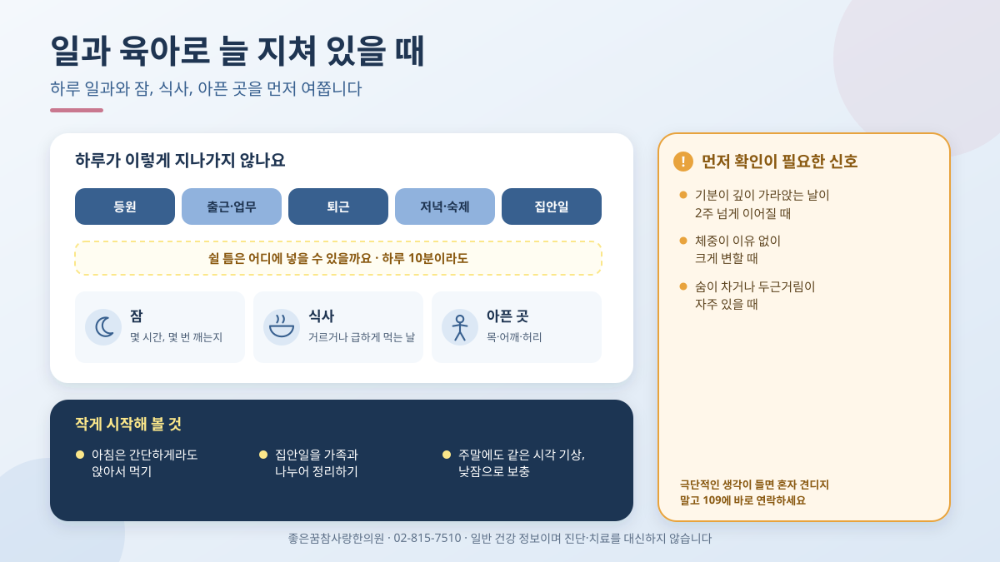
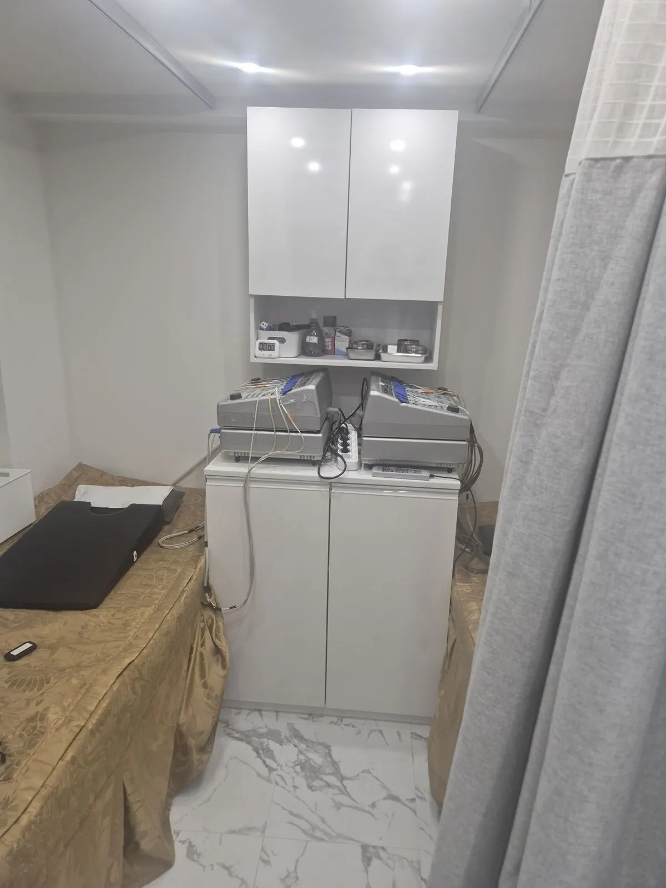

일과 육아를 함께 하며 늘 지쳐 있다면 하루 일과와 잠, 식사, 몸의 아픈 곳을 먼저 묻고 작게 쉴 틈을 함께 찾으며, 빈혈이나 갑상선처럼 확인이 필요한 원인이 없는지도 살핍니다.
여쭙는 것
- 하루 중 온전히 쉬는 시간이 얼마나 되나요?
- 잠은 몇 시간 정도, 몇 번 깨며 주무시나요?
- 끼니를 거르거나 아이가 남긴 것으로 때우는 날이 많나요?
생활에서 해 볼 것
- 하루 10분이라도 혼자 있는 시간을 정해 두기
- 아침은 간단하게라도 앉아서 먹기
- 집안일 중 줄이거나 나눌 수 있는 것을 가족과 정리하기
한의원에서 함께 살필 것
- 피로가 쌓여 아침에 일어나기 힘든 경우 잠과 식사, 몸의 상태를 함께 살핍니다.
- 목·어깨·허리 통증이 함께 있는 경우 아픈 동작과 자세를 함께 살핍니다.
- 예민함과 무기력이 번갈아 오는 경우 마음의 부담과 생활 리듬을 함께 살핍니다.
먼저 확인이 필요한 신호
- 기분이 깊이 가라앉고 아무것도 하기 싫은 날이 2주 넘게 이어지는 경우
- 체중이 이유 없이 크게 변하는 경우
- 숨이 차거나 두근거림이 자주 있는 경우

일과 육아를 함께 하며 늘 지쳐 있다면, 하루 일과와 잠, 식사, 몸에서 아픈 곳을 먼저 묻고 작게라도 쉴 틈을 함께 찾습니다. 피로가 오래 이어지면 빈혈이나 갑상선처럼 확인이 필요한 원인이 없는지도 함께 살핍니다. 출근 전 아이를 등원시키고 퇴근 후에는 저녁과 숙제를 챙기다 보면 하루가 끝나, 아픈 곳이 있어도 병원 갈 시간조차 없다는 분이 많습니다.
왜 이런 불편이 생길 수 있나요
- 잠이 부족하거나 아이 때문에 밤에 자주 깨면, 오래 누워 있어도 회복이 덜 된 느낌이 남습니다.
- 끼니를 거르거나 급하게 먹는 날이 이어지면 오후에 기운이 크게 떨어질 수 있습니다.
- 아이를 안고 들고, 집안일을 하며 목·어깨·허리에 통증이 쌓이면 피로가 더 커집니다.
- 빈혈, 갑상선 기능 변화, 우울감처럼 피로 뒤에 다른 원인이 있는 경우도 있습니다.

먼저 이렇게 여쭙니다
- 하루 중 온전히 쉬는 시간이 얼마나 되나요?
- 잠은 몇 시간 정도, 몇 번 깨며 주무시나요?
- 끼니를 거르거나 아이가 남긴 것으로 때우는 날이 많나요?
- 몸에서 가장 불편한 곳은 어디인가요?
- 최근 건강검진에서 빈혈이나 갑상선 결과는 어땠나요?
일상에서 먼저 해 볼 수 있는 것
- 하루 10분이라도 혼자 있는 시간을 정해 두기
- 아침은 간단하게라도 앉아서 먹기
- 집안일 중 줄이거나 나눌 수 있는 것을 가족과 정리하기
- 잠들기 전 휴대폰 대신 가벼운 스트레칭하기
- 주말 하루는 늦잠보다 같은 시각에 일어나 낮잠으로 보충하기

한의원에서 함께 살필 수 있는 경우
- 피로가 쌓여 아침에 일어나기 힘든 경우 잠과 식사, 몸의 상태를 함께 살핍니다.
- 목·어깨·허리 통증이 함께 있는 경우 아픈 동작과 자세를 함께 살핍니다.
- 예민함과 무기력이 번갈아 오는 경우 마음의 부담과 생활 리듬을 함께 살핍니다.
좋은꿈참사랑한의원에서는 먼저 하루 일과와 가장 힘든 시간대를 충분히 듣고, 진맥과 복진 등 필요한 방법으로 몸 상태를 살핍니다. 통증이 있으면 침, 약침, 추나를, 피로와 잠이 중심이면 생활 리듬 조정과 한약 상담을 상태에 맞게 정하고, 검사가 필요하다고 판단되면 다른 의료기관을 안내합니다. 토·일·공휴일에도 오후 3시까지 진료해 주중에 시간이 없으신 분도 오실 수 있습니다.
이렇게 기록해 오시면 상담이 쉬워집니다
- 평일 하루 일과(기상부터 잠들 때까지)
- 잠든 시간, 깬 횟수, 아이 때문에 깬 일
- 끼니를 거른 날과 주로 먹은 것
- 최근 건강검진 결과지

이런 증상은 먼저 확인이 필요합니다
- 기분이 깊이 가라앉고 아무것도 하기 싫은 날이 2주 넘게 이어지는 경우
- 체중이 이유 없이 크게 변하는 경우
- 숨이 차거나 두근거림이 자주 있는 경우
마음이 많이 지치고 극단적인 생각이 든다면 혼자 견디지 말고 109나 119에 바로 연락하세요. 임신 중이거나 임신 가능성이 있다면 진료 전에 꼭 알려 주세요. 복용 중인 약은 처방한 의사와 상의 없이 줄이거나 끊지 않습니다.
한눈에 보는 표
| 구분 | 핵심 |
|---|---|
| 여쭙는 것 | 하루 중 온전히 쉬는 시간이 얼마나 되나요? 잠은 몇 시간 정도, 몇 번 깨며 주무시나요? |
| 생활에서 해 볼 것 | 하루 10분이라도 혼자 있는 시간을 정해 두기 아침은 간단하게라도 앉아서 먹기 |
| 한의원에서 함께 살필 것 | 피로가 쌓여 아침에 일어나기 힘든 경우 잠과 식사, 몸의 상태를 함께 살핍니다. 목·어깨·허리 통증이 함께 있는 경우 아픈 동작과 자세를 함께 살핍니다. |
| 먼저 확인이 필요한 신호 | 기분이 깊이 가라앉고 아무것도 하기 싫은 날이 2주 넘게 이어지는 경우 체중이 이유 없이 크게 변하는 경우 |
자주 묻는 질문
주말에도 진료하나요?
토·일·공휴일에도 09:30~15:00에 진료합니다. 방문 전 전화로 확인해 주세요.
아이와 함께 가도 되나요?
네. 방문 전 전화 주시면 편한 시간을 함께 정해 드립니다.
피곤한 것도 진료 대상인가요?
네. 피로가 일상을 흔든다면 잠과 식사, 몸 상태를 함께 살펴볼 이유가 충분합니다.
진료 시간은 어떻게 되나요?
좋은꿈참사랑한의원은 평일 09:30~20:00(점심 13:00~14:00), 토·일·공휴일 09:30~15:00에 진료합니다.
이 글은 일반적인 건강 정보이며 개인의 진단이나 치료를 대신하지 않습니다. 증상이 있거나 복용 중인 약이 있다면 진료를 통해 확인하세요. 치료 효과는 개인마다 다를 수 있습니다.
작성 기준: 일반적으로 알려져 있는 건강 정보를 참고해 정리했습니다(대표원장 감수). 증상 기록은 1~2주 동안 하루 1회, 비슷한 시간에 적어 오시면 지난 상태와 비교하기 쉽습니다.
좋은꿈참사랑한의원은 재진 때 지난번 이야기부터 이어서 여쭙니다. 진료시간과 예약은 오시는 길에서 확인하세요.